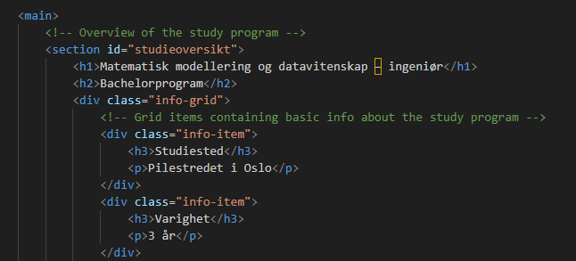

Tilgjengelighet på nettstedet
Tilgjengelighet sikrer at innholdet er brukbart for alle, uavhengig av funksjonsnivå. Nettstedet er designet med prinsippene for universell utforming i henhold til WCAG 2.1. Spesielt vektlegges navigasjon, skjermleservennlighet og god kontrast mellom tekst og bakgrunn.
Automatiske tester
Det ble gjennomført automatiske tester med Accessibility Insights for Web. Testen vurderte flere aspekter ved nettstedet:
- Kontrastforhold mellom tekst og bakgrunn.
- Korrekt bruk av
alt-attributter for bilder. - Semantisk korrekt HTML-struktur for landemerker og overskrifter.
- Skjermleservennlige beskrivelser av lenker og interaktive elementer.
Testresultatene viste at nettstedet oppfyller WCAG 2.1 AA-krav uten kritiske feil. Selv om de automatiserte testene gir verdifull innsikt, kan de ikke erstatte manuelle gjennomganger.
Manuell gjennomgang
For å sikre full tilgjengelighet ble følgende tiltak kontrollert manuelt:
- Alle bilder har relevante
alt-attributter elleralt=""for dekorative bilder. - Navigasjon er mulig via tastatur med tydelig fokusmarkering og korrekt
tabindex-rekkefølge. - ARIA-roller og -attributter er lagt til der det gir verdi for skjermleserbrukere, som
aria-labelfor lenker. - Overskriftene følger en logisk struktur fra
h1tilh6. - Kontrasten mellom tekst og bakgrunn er manuelt verifisert ved hjelp av Accessible Colors.
Eksempel på kode som fremmer tilgjengelighet:
Designvalg for universell utforming
Flere designvalg er implementert for å sikre tilgjengelighet:
- Konsekvent og intuitiv navigasjon med beskrivende
aria-label-attributter for lenker. - Tydelige fokusstiler for å sikre god synlighet for tastaturbrukere.
- Høykontrastfarger mellom tekst og bakgrunn, som oppfyller og overgår WCAG AA-kravene.
- Responsivt design som sikrer god brukervennlighet på alle enheter.
Tilgjengelighet er en kontinuerlig prosess. Selv med automatiske tester er manuell kontroll nødvendig for å oppdage skjulte problemer og sikre universell utforming.